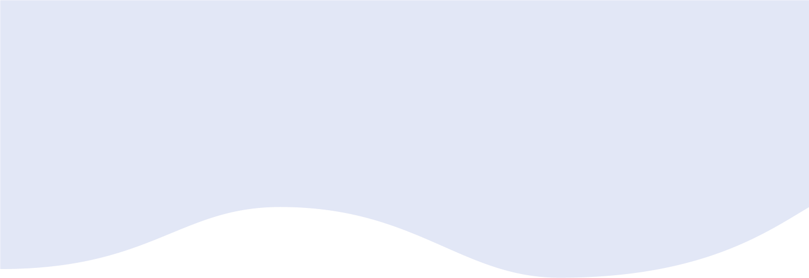
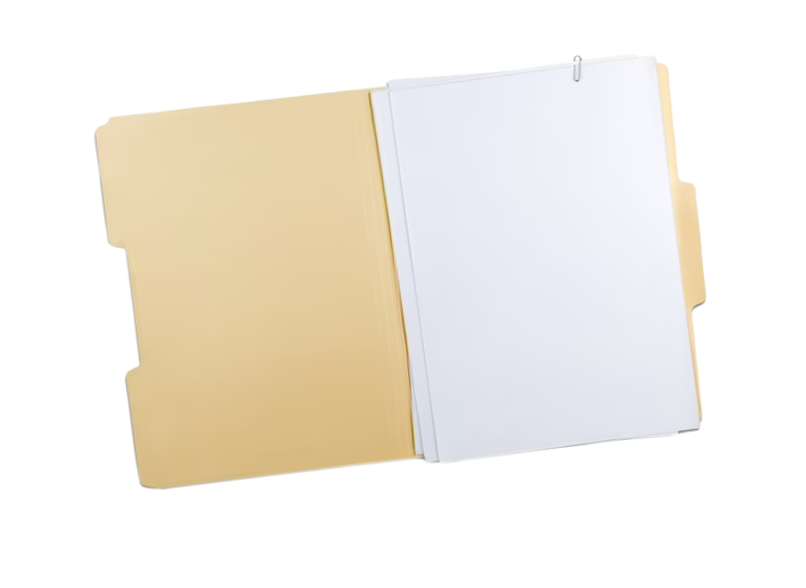
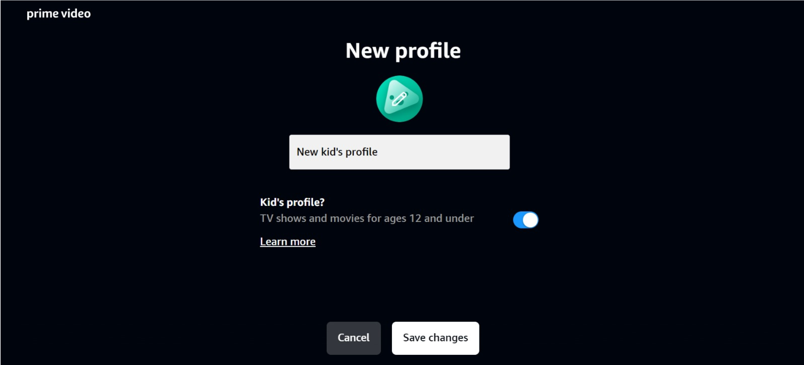
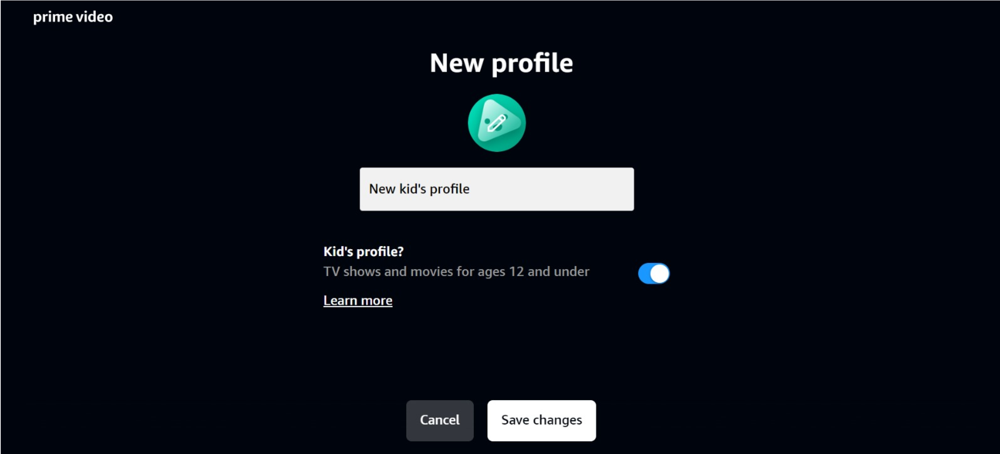

The aim of this usability testing is to find and understand common issues with respect to the website interface of “Amazon Prime Video” and to thus enhance the user’s experience.
The usability testing has been done for the website version of Prime Video.
UI/UX Design Usability Testing Research
Duration: 1 month Team type: 4 members
Scope of testing:
The aim of this usability testing is to find and understand common issues with respect to the website interface and to thus enhance the user’s experience.
Objectives:
The usability testing was conducted online, through Zoom platform (Zoom ver. 6.0.3(37634)) from 28th April through 1st May.
Test Design
The test has been designed while keeping in mind the test objectives, i.e assessing navigation, testing a few features, analyzing how users search for content and getting any sort of feedback the participant is willing to share.
To execute this, a scenario was given and six tasks were designed pertaining to this scenario that covers all key aspects of the objectives we want to test.
Link to User test plan.
After this, participants were selected for the usability test.
To these participants, NDA, background, pre-test and post-test questionnaires were sent.
Participant selection
Participants- 6
Male:Female- 1:3
Occupation: School and college students, working professional


 
